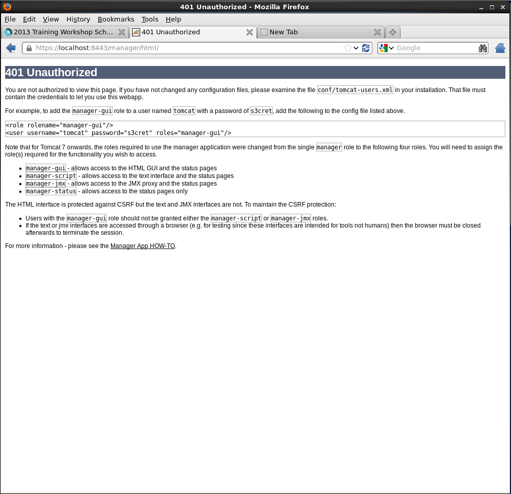
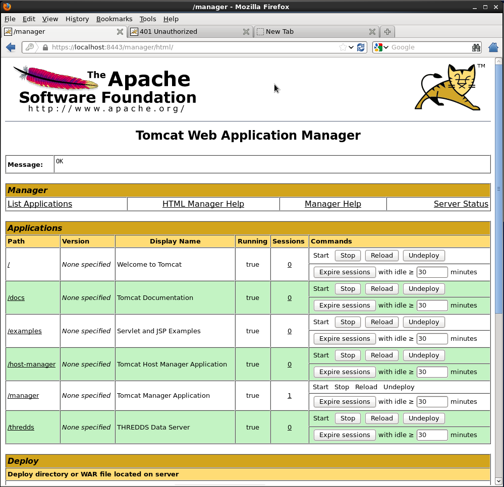
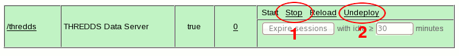

“Free” web application that comes with Tomcat distribution.
Lives in the manager directory in the Tomcat webapps/ directory.
Allows Tomcat administrators to deploy, undeploy, or reload web applications such as the TDS without having to shut down and restart Tomcat.
Provides server status statistics for the JVM and each connector you have configured in server.xml.
Note: More about manager: For more information about the Tomcat manager application, see the Tomcat Manager App HOW-TO documentation.
Accessing the Tomcat manager application
Note:
Changes to the manager application: The manager application URLs and roles have been re-structured.
See the Tomcat Migration guide for more information.
Attempt to access the Tomcat manager application in your browser by visiting http://localhost:8080/manager/html/.
You will be prompted to login via BASIC authentication, which will end in failure since we do not yet have permission to access the manager application.

Question:
Based on what we know about Tomcat configuration, which file in the Tomcat conf/ directory should we edit to grant ourselves access to the manager application?
Important:
Keep in mind: Changes to tomcat-users.xml do not take effect until Tomcat is restarted.
Granting access to the manager application
Modify tomcat-users.xml to add role and user elements.
Using your favorite editor, open ${tomcat_home}/conf/tomcat-users.xml:
$ vi tomcat-users.xml
Between the <tomcat-users> tags, add a role element and specify the rolename attribute as manager:
Now add a new user by adding a user element.
Create a username and password for the new user and specify manager-gui as one of the roles (in this example we are creating a user called admin with a corresponding password of secret):
Restart Tomcat and log into the manager application.
Thinking Ahead:
To gain access to restricted parts of the TDS, you will perform the same steps you used to grant yourself access to the manager application.
Attempt to access the manager application again http://localhost:8080/manager/html/, this time logging in using the user name and password specified in tomcat-users.xml:

Voilá! You should have access to the manager application.
Troubleshooting:
Check the XML syntax in tomcat-users.xml to make sure it is well-formed and without error.
Troubleshooting:
Did you restart Tomcat after you made your changes to tomcat-users.xml?
Troubleshooting:
Any errors will be reported in the Tomcat logs/catalina.out file.
Deploying the TDS using the manager application
Use the manager application to undeploy the TDS.
Find the TDS in the list of web application on the Applications page.
Stop and then Undeploy the TDS:

List the contents of the Tomcat webapps/ directory to verify that both thredds.war and the unpacked thredds/ directory have been removed: